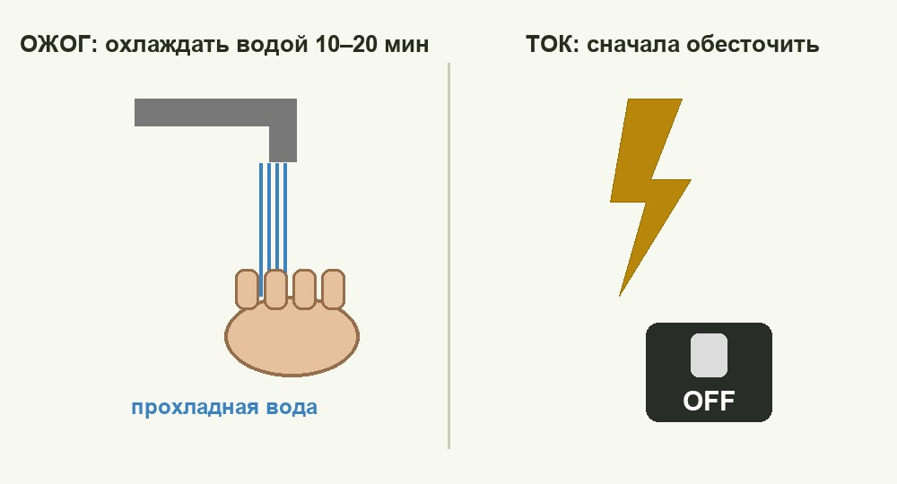

Медициналық дайындық Medical Training Медицинская подготовка
Күйікті суыту, токтан зақымдану кезінде құтқару және өмірді сақтау. Cool the burn, cut the power, and protect life in an emergency. Охладить ожог, обесточить и спасти жизнь в неотложной ситуации.

Күйік — жоғары температураның, химиялық заттардың, электр тогының немесе сәулеленудің әсерінен тіндердің зақымдануы. Әсер еткен факторға қарай күйіктер термиялық (от, ыстық сұйықтық, бу, ыстық зат), химиялық (қышқыл, сілті), электрлік және сәулелік болып бөлінеді. Зақым ауырлығы тереңдік (дәреже) мен зақым ауданына байланысты. Дұрыс әрі жылдам көрсетілген алғашқы көмек ауырсынуды, инфекцияны және күйік шогын азайтып, асқынудың алдын алады. A burn is damage to tissue caused by high temperature, chemicals, electricity or radiation. By the causing agent, burns are thermal (fire, hot liquid, steam, a hot object), chemical (acid, alkali), electrical and radiation burns. Severity depends on the depth (degree) and the affected area. Correct, fast first aid reduces pain, infection and burn shock and prevents complications. Ожог — повреждение тканей под действием высокой температуры, химических веществ, электричества или излучения. По действующему фактору ожоги делятся на термические (огонь, горячая жидкость, пар, горячий предмет), химические (кислота, щёлочь), электрические и лучевые. Тяжесть зависит от глубины (степени) и площади поражения. Правильная и быстрая помощь уменьшает боль, инфекцию и ожоговый шок, предотвращая осложнения.
| ДәрежеDegreeСтепень | Зақым тереңдігіDepth of damageГлубина поражения | БелгілеріSignsПризнаки |
|---|---|---|
| I | эпидермистің беткі қабатыsurface of the epidermisповерхностный слой эпидермиса | қызару, ісіну, ауырсынуredness, swelling, painпокраснение, отёк, боль |
| II | бүкіл эпидермисfull epidermisвся толща эпидермиса | мөлдір сұйықтығы бар көпіршіктер, қатты ауырсынуblisters with clear fluid, severe painпузыри с прозрачной жидкостью, сильная боль |
| III | терінің бүкіл қалыңдығыfull thickness of the skinвся толща кожи | құрғақ қотыр (струп), сезімталдықтың төмендеуіdry scab (eschar), reduced sensationсухой струп, снижение чувствительности |
| IV | тері асты, бұлшықет, сүйекsubcutaneous tissue, muscle, boneподкожная клетчатка, мышцы, кости | көмірлену, тіндердің өлуіcharring, dead tissueобугливание, омертвение тканей |
Зақым ауданын «тоғыздар ережесімен» бағалайды: бас пен мойын — 9%, әр қол — 9%, дене алды мен арты — 18%-дан, әр аяқ — 18%, шат — 1%. Зардап шегушінің алақаны ≈ 1%-ға тең. Ауданы 10%-дан асатын терең күйік өмірге қауіпті — дереу медициналық көмек қажет. The affected area is estimated by the "rule of nines": head and neck — 9%, each arm — 9%, front and back of the torso — 18% each, each leg — 18%, groin — 1%. The victim's palm ≈ 1%. A deep burn covering more than 10% is life-threatening and needs urgent medical care. Площадь оценивают «правилом девяток»: голова и шея — 9%, каждая рука — 9%, передняя и задняя поверхности туловища — по 18%, каждая нога — 18%, промежность — 1%. Ладонь пострадавшего ≈ 1%. Глубокий ожог более 10% площади опасен для жизни — нужна срочная медицинская помощь.
Зақымдалған жерді мол ағынды сумен 15–20 минут (сілтіде — одан да ұзақ) жуыңыз. Алдымен құрғақ ұнтақты сілкіп тастаңыз. Қышқылды сілтімен, сілтіні қышқылмен бейтараптамаңыз — реакция қосымша зақым береді. Зат сіңген киімді шешіп, көзге түссе, көзді сыртқы бұрыштан мұрынға қарай шайыңыз. Rinse the area with plenty of running water for 15–20 minutes (longer for alkalis). Brush off dry powder first. Do not neutralise acid with alkali or vice versa — the reaction causes extra damage. Remove contaminated clothing; if the eye is affected, rinse it from the outer corner towards the nose. Промывайте обильной проточной водой 15–20 минут (при щёлочи — дольше). Сухой порошок сначала стряхните. Не нейтрализуйте кислоту щёлочью и наоборот — реакция даёт дополнительное повреждение. Снимите загрязнённую одежду; при попадании в глаз промывайте от наружного угла к носу.
Электр тогы жүректің ырғағын бұзып, тыныс пен жүректі тоқтатуы, ішкі күйік пен «ток белгілерін» қалдыруы мүмкін. Құтқарушының бірінші әрі басты міндеті — өзін зақымдамау. Electric current can disturb the heart rhythm, stop breathing and the heart, and leave internal burns and "current marks". The rescuer's first and main duty is not to become a victim too. Электрический ток может нарушить ритм сердца, остановить дыхание и сердце, оставить внутренние ожоги и «метки тока». Первая и главная задача спасателя — не пострадать самому.